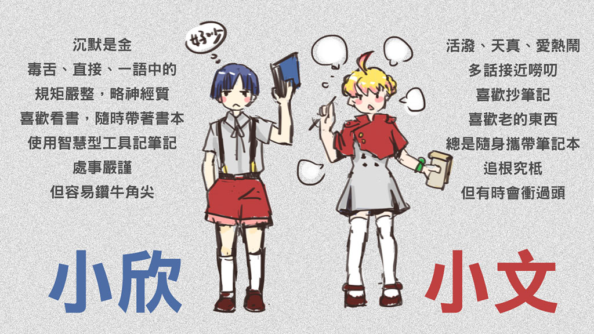

緒論
2012 年初，臺灣人的生活與社群媒體已密不可分，高達 75% 的網路使用者都在使用臉書。儘管社群媒體如此普及，當時的網民卻不看好網路對公民培力，乃至公民參與，能起到什麼作用。作家張大春接受訪問時，點出其中落差：
問：可是你覺得 Facebook 是促使公民參與政治的一個工具嗎？
張大春：不會，我可以斬釘截鐵的講，絕對不會。它會讓公民以為自己參與了。[…] 我還是想不出來有一個讓大家又懶又可以參與的，真正的行動的實踐。
徐子涵將問題癥結歸納為五個面向：
- 非營利組織難以主動掌握媒體網路，以致動員成效不佳
- 個人覺得無力參與體制、影響政策
- 線上的協同參與，無法轉化為實體行動
- 開放源碼社群對社會議題不聞不問
- 因為世代差異，網路公民鮮少和傳統的社運團體合作
2012 年末，一群網路公民對政府持續忽視資訊不透明的問題感到失望，於是集結起來成立了零時政府，希望改善公民參與的環境。經過一年的努力，針對上述問題，我們做出以下貢獻：
- 建立群眾參與的媒體平台，如新聞小幫手(Q3.3)和國會大代誌(Q4.1)，同時和傳統媒體合作(Q4.2)。
- 善用人民力量，協同編纂辭典(Q1.2)、社會福利索引(Q2.1)和當代歷史(Q2.3)，化被動(Q0.2)為主動，賦與網路使用者更多權力。
- 定期舉辦黑客松工作坊(Q0.3)，並為社會運動提供後勤支援(Q3.2)，創造出兼具線上和實體社運特色的文化空間(Q4.3)。
- 根據開放原始碼原則(Q2.2)，提供社群協作的基礎建設(Q1.1)，讓公民活動成為黑客學習社群的一環。
- 設計外延計畫，關心勞工權益(Q1.3)、服貿黑箱(Q4.3)等社會議題，與社運人士共同努力，運用網路來提升大眾社會意識與凝聚共識(Q3.1)。
我們的努力源自一個簡單、明確的想法：秉持行動主義、開源模式和公民精神，就能結合自由軟體、群眾媒體和社運團體的典範，打造出致力於資訊透明化的社群。

背景：2012 年的冬天
「實價登錄」事件 [Q0.1]
在民眾由於房價炒作上漲而人心惶惶之際，總統馬英九將「居住正義」作為 2012 年競選連任的主要政見。為了制止投機行為並建立公平稅制基礎，朝野兩黨共同通過「地政三法」，規定所有房地產交易都必須登錄實際成交價格。
為推行這項法令，內政部委託廠商建立「實價查詢服務網」，讓民眾鍵入街道地址來查詢登錄資料。該網站於 10 月中旬上線後，立刻被龐大的查詢人次淹沒，到月底為止都處於間歇運作的狀態。
網站上線的第三天，由羅永杰、鄭依桓、蔡旭程、吳光哲四位臺灣 Google 工程師組成的團隊將內政部的資料併入民間版「實價登錄地圖」網站，在 Google 地圖上顯示彙整過的平均房價，並提供各式各樣的過濾功能。這個網站一推出立刻聲名大噪，以每秒處理上百次請求的速度順利運作。
一週後，曾任職於 Google 的政務委員張善政邀請團隊見面磋商。團隊做出了友好回應，也針對民間和政府的合作模式、資料格式與回饋機制，提出了詳細的建議。
然而，在媒體大肆渲染「只花 500 元」的地圖網站勝過「耗資 90 萬卻被塞爆」的政府網站之後，雙方關係便急轉直下。內政部將官網當站的責任推卸給民間的整批下載行為，並申明批次複製必須事先繳費申請，否則可能觸法。
11 月中旬，政府網站將所有的街道地址換成圖檔，大幅增加了擷取的負擔，也讓對立的情勢加劇。雖然有高手黑客使用文字辨識技術公佈爬梳過的資料，但這無異於將事件演變成消耗戰，顯然只會兩敗俱傷。不久之後，民間版的「實價登錄地圖」就關站了。

「經濟動能推升方案」 [Q0.2]
在實價登錄事件發生的同時，政府推出了一支 40 秒的〈經濟動能推升方案〉宣導短片，頓時成為新聞焦點。短片中完全沒有任何具體資訊，只有不斷重複的旁白：「短短幾句話，無法說明這麼多的政策。這些方案實在很複雜，很多事情正在加速進行中。說破嘴不如跑斷腿，拚經濟，做就對了！」
這支廣告在網路上廣為流傳，激起民眾的輕蔑與反感。許多人在 YouTube 按下「檢舉不實內容」以示抗議。YouTube 的自動化系統很快就將影片判定為詐騙廣告下架，行政院的頻道也因此被停權兩天。
停權恢復之後，短片在 10 月 19 日再次上線，正好是 2012 Yahoo Open Hack Day 的前夕。在這一年一度的活動裡，六十四隊開發者要在 24 小時之內，各自實作出創新作品。為表達對這支廣告的憤怒情緒，「Hacker 15」團隊的高嘉良、吳泰輝、陳學毅、郭嘉渝四人臨時取消了原本要做的線上櫥窗計畫，將題目從電子商務換成「稅金都用到哪裡去了？」的視覺化網站。
最後的成品「全民審預算」運用互動圖表，依比例呈現中央政府各部門的預算，讓民眾為每項開支的效益評分。在每組兩分鐘的 Hack Day 展示時，他們以「無用的預算（例如某支廣告）應該交給全民刪除」為號召，成功贏得了新台幣五萬元的佳作獎金。
群眾通常很快就會把這類計畫淡忘。有鑑於此，高嘉良靈機一動，註冊了「零時政府」（g0v.tw）這個非常好記的網域，專門給各式「民間版政府網站」使用：只要把內政部實價查詢服務網（lvr.land.moi.gov.tw）改一個字，就可以連到民間版實價登錄地圖（lvr.land.moi.g0v.tw）。而他們的作品「中央政府總預算」（budget.g0v.tw），也就此成為零時政府的第一項專案。

第零次動員戡亂黑客松 [Q0.3]
註冊了 g0v.tw 網域之後，四人決定把五萬元獎金拿出來辦黑客松，來集結更多公民資訊專案。這次聚會採用「由參與者主導議程」的 BarCamp 模式，定名為「第零次動員戡亂黑客松」，展現了 1949 年內戰時期的叛逆形象。
結果報名者反應熱烈，不久便超出了原定場地所能容納的人數，幸好中央研究院 MMNet 實驗室主持人及時伸出援手，答應出借資訊科學研究所舉辦活動。12 月 1 日，黑客們坐滿了該院可容納 80 人的一樓大廳，展示各自的專案，範圍涵蓋大大小小的政府職能，包括國會、標案、地理、氣象、電力、醫療等眾多領域。一整天的活動結束後，他們在線上平台 Hackpad 和 IRC 上繼續進行熱烈的討論。
為了支援努力寫程式的眾人，幾位作家和部落客在臉書上組成「文案配送中心」群組，為任何需要文字的專案提供協助。設計師吳逸文也發起了「設計配送中心」群組，為黑客們提供各式視覺產出。也因為看不下去原本草率成形的「零時政府」標誌，他在會後繼續反覆修改，最終完成了一套視覺形象準則，成功把 g0v 提升為易於識別的品牌。

2013．第一季
基礎建設 [Q1.1]
隨著各專案在網路上持續運作，參與 g0v 的寫作者及設計師們發現臉書群組缺乏「共享書籤」或「任務追蹤」等必要的功能。另一方面，開放源碼常用的開發工具，像是 Git、IRC、Wiki 等，在非資訊人參與時造成不小的入門障礙。
為了處理這個問題，hack.g0v.tw 在 2013 年 1 月上線。作為線上計畫及實體活動的共通入門處，它結合了幾種不同的工具，形成協作的空間：
- Hackfoldr：將所有和各專案相關的連結，組織成多層次的書籤。
- EtherCalc：提供即時多人編輯的試算表，並依照 Hackfoldr 的需求設計出 API。
- 成員名錄：讓參與者能用專案、議題、技術及興趣的標籤找到彼此。
- 專案列表：列出每個計畫的聯絡資訊，以及適合新貢獻者入手的任務。
- 網頁聊天室：保存逐日的討論紀錄（每句話都有可引用的網址），並介紹新的使用者進入 IRC。
由於專案及參與者來自四面八方，我們偏好輕量的描述「標籤(Tags)」，摒棄制式規定的結構「分類樹(Taxonomy)」。也因為我們許多活動都是面對面進行，我們較常使用即時共享文件（例如 Hackpad 及 EtherCalc），而非為遠距協作設計的版本校訂工具（例如 Wiki 及郵件群組）。
還文於民 [Q1.2]
2012 年 12 月的聚會非常成功，下一場活動於是接踵而至。「第壹次公地放領黑客松」於隔年 1 月 27 日在臺北、臺中、高雄等三個城市舉行，現場吸引了上百位黑客，遠端參加的人更多。
其中一名線上參與者是葉平，他是開放源碼的長期倡導者，在 2011 年移居美國。他在黑客松前夕發布了一篇部落格文章，呼籲零時政府的黑客把《重編國語辭典修訂本》從教育部的老舊網站系統解放，以便「用開放的文字 API 釋放出來，加上索引和搜尋的功能，讓任何想加值的個人或公司都可以使用。」
《教育部國語辭典》擁有超過 16 萬筆詞彙，包含豐富的歷史用法，充分引用經典文本作為書證。自 1945 年首次出版以來，它一直是繁體中文的權威定義參考。在 1996 年推出的網頁版《重編國語辭典修訂本》，即使在接下來 17 年裡幾乎未曾升級，依然吸引了近 2 億人次使用。
如何才能把這部辭典發展成擁有固定網址的現代網站、使用 Unicode 字碼，甚至適用於行動裝置呢？葉平認為，教育部應提供開放的字典資料，讓民眾自行決定如何呈現這些內容。由於教育部持相反立場，明確禁止重製，葉平決定親自動手設計所需的資料結構，讓公民黑客可以擷取辭典資料以「還文於民」。
超過 30 人參與的「萌典」團隊在黑客松期間組成，並且連夜趕工。翌日，團隊成員不但以 JSON 和 SQL 格式發表了完整的內容，而且還完成了適用於各大平台的網站和應用程式雛型。由於當時民間版實價登錄地圖關站事件記憶猶新，我們搶先透過兩個法律程序避開版權問題：
- 根據著作權法第 50 條，我們聲稱對政府生成的資料可作合理使用，並嚴格堅守非營利用途的原則，採取非侵權的立場。
- 透過 CC0 公眾領域貢獻宣告，我們放棄所有著作財產權，確保教育部可在任何時候納入我們的所有貢獻。
經數月審議，教育部終於同意這項合理使用聲明，並與我們合作，把以創用CC授權釋出的《臺灣閩南語常用詞辭典》與《客家語常用詞辭典》整合進可交叉引用的萌典多語文應用平台。這個網站目前每月提供數百萬人次的服務，至 2013 年年底，也有超過 10 萬用戶將萌典應用程式安裝在自己的行動裝置上。
求職小幫手 [Q1.3]
2013 年 1 月，適逢宏達電拒發加班費風波，有感於勞資雙方資訊不對等的問題，王向榮提出「求職小幫手」的應用程式概念：「若我們能在網路找工作時，就知道這家公司是否有違反過勞基法，我們應該會更警覺，甚至知道工作的風險後，會對待遇的要求更加小心。」
其實早在 2011 年 6 月勞基法修正後，公司只要有違反勞基法的規定，各縣市的勞工局就可公佈出來讓人查閱。但對於求職者來說，首先得瞭解去應徵的公司登記在哪個縣市下，再去勞工局網站下載 PDF 等各種格式的公告，逐一開啟用肉眼找尋——更不用說一般求職者根本不知道勞工局定期公佈的資訊，對個人求職可能有莫大幫助。
因為人力仲介網站並沒有呈現這些資訊，因此「求職小幫手」在開發時，採用瀏覽器外掛程式的方式，讓上網者只要安裝，在看到求職網站中的工作機會時，就會自動跳出該公司的勞基法違規資訊。
違規資訊要如何取得？這部份除了手工處理，別無他法。王向榮與網友 nansenat16 於是整理出對應的資料統一格式，用程式擷取各縣市政府勞工局的違反勞基法公司名單，再定期更新到求職小幫手的資料庫裡。
雖然耗費時間心力，但辛苦沒有白費，「求職小幫手」截至目前為止，共有 3 萬多位使用者安裝，支援的求職網站囊括國內各大人力銀行，也得到 Chrome Store 使用者好評 4.88 顆星，將近滿分的感謝。
2013．第二季
福利請聽 [Q2.1]
聽障開發者陳柏儒苦於各級政府門檻繁複且法條眾多的福利政策，希望能夠設計一個簡明便利的「聽障福利網」，讓民眾可以快速的鍵入自身的條件後，便篩選出適當的管道、法源依據以及適用的福利內容。
在公地放領黑客松展示概念、紀錄於 Hackfoldr 平台後，「病後人生」部落格站長羅佩琪從網路上看到這個計畫，覺得和自己網站的宗旨「醫療、照護、社福、喪葬，一站式資訊服務網」不謀而合，於是主動寫信，希望加入開發團隊。
在 3/23 「第貳次九大建設黑客松」時，團隊的六位成員決定擴大關懷範圍，從聽障延伸至老人、幼兒、低收入戶、身心障礙、榮民等族群，並納入民間組織提供的補助方案，而專案名稱也正式改為「福利請聽」。
福利請聽經過四個月的開發之後，於七月正式上線。網站的座右銘「一個成功的社會並不是看富裕的人過得多優渥，而是弱勢者如何自在的生存」，以及 NPOst 等公益媒體的後續追蹤報導，都擴大了 g0v 專案關懷的層面，更讓後續黑客松裡經常出現社福相關的議題。
開放源碼開發者研討會 [Q2.2]
自 2003 年首次舉辨跨社群的 Perl/PHP/Python Party 大會以來，每年春天的 OSDC.tw 十年來一直是臺灣開源界規模最大的開發者年度研討會。零時政府此次發表了兩項主題演講，有系統的提出了技術和運作方向上的具體論述。
在「PgREST — 萌典」簡報裡，唐鳳透過萌典的開發過程，顯示「關連式資料庫、試算表、多人協作文件、前後端網站、行動裝置應用」等乍看之下截然不同的技術領域，如何透過新的「無中介層全端開發」整合模式，在短時間內用同一套工具完成，大幅降低了非專職網站工程師的進入門檻。
吳泰輝的「g0v 黑客松 — 寫程式改造社會」則提出了三個運作概念：
- 去中心化：各專案「分身伐樹」，彼此橫向支援，沒有人代表 g0v。
- 資訊透明：讓政府的各項資料都有易讀的網址，以便引述監督與提議修正。
- 開放源碼：所有 g0v 專案都採開源及創用 CC 授權釋出，讓社群成員能夠接力開發。
在演講結論時，兩人都肯定了「待用政府」的路線：與其批評施政，不如一起動手做出更合適的版本，再以「提供補綴」的角色促進公部門改變——這也成為日後 g0v 與政府單位合作時的基調。
從震怒到政誌 [Q2.3]
如果你在網路上偶然看見一條精美的時間軸網站，卻發現這是財團做出來的自圓其說版本，無比美侖美奐、卻只為自己發聲：掩蓋不同立場的說法、隱藏傷害土地的事實、將需要關懷的文化傳統風乾下酒。你是一個網頁程式設計師，除了覺得哀傷、鄙視財團之外，又會怎麼作？
化悲憤為力量，這就是促使黃雋開發「政誌」網站構想的初衷：他希望能簡化複雜的脈絡，以時間為順序呈現事件始末，用一個沒有財團在背後的網站，讓大眾能更瞭解貼近真相的資訊。
2013 年初夏時，以對政治憤怒的意象為出發點，原名「怒政」的時間軸專案，經過參與者的腦力激盪，改成為與政治諧音的「政誌」，希望人們可以記得這些努力走過、熱情爭取過，以血淚行動創造出來的歷史；無論結果如何，很多事情都在進展中，不該被輕易遺忘。
目前政誌上的資料，由維基百科的條目整理而來，一方面能夠繼承既有的歷史資料，另一方面也藉由 Wikipedia 任何人都可以編輯的特色，希望一般人就有辦法參與「政誌」事件或政治事件的紀錄。
從八月初開站迄今，共有 21 位成員參與程式開發及首頁編輯，而內容更是來自無數維基百科的撰寫者。熱門的政誌內容有「同性婚姻、九月政爭、大統油品、白衫軍運動、大埔事件、核四公投、日月光廢水、毒澱粉」……等 2013 年發生的重大事件。這些事件雖然都還在進展，但很快就會被媒體、大眾遺忘。「政誌」不但需要程式開發者，更需要一般人將見證過的歷史從腦袋中掏出來，紀錄在維基百科，讓我們不會忘記臺灣發生過的事情。
2013．第三季
動民主 [Q3.1]
除了關心臺灣社會事件，我們也受歐洲風起雲湧的民主運動啟發：冰島全民制憲、芬蘭群眾立法、義大利五星運動、德國海盜黨等先例，讓零時政府在促進政府資訊透明化之餘，也看到由網路集結眾智、形成公共政策的可能性。
有鑑於此，零時政府成員將海盜黨的 Liquid Feedback（流動式民主）線上議決系統譯成中文，並取名為「動民主」。這套系統在 6 月 8 日「第參次客廳工廠黑客松」初次試用，以排序投票法定出該次黑客松的最佳專案——獎品是一票難求的「開源人年會」門票四張。
動民主團隊在 6 月底與德國、義大利海盜黨舉行線上會議，並參考奧地利海盜黨的 Polly 系統之後，決定擴充現行的議決平台，納入前期提案討論、後期成效追蹤等功能，成為公民團體參政的「線上基礎決策系統」（Basisentscheid Online）。
對系統藍圖取得初步共識後，規劃符合需求的界面便成為首要之務。設計師藍一婷從繪製議決頁面開始，逐步規劃出創制權平台的三段樣貌：
- 議題：針對引發社會爭議的主題收集資訊，讓各方參與者交流背景知識、建立共通的討論基礎。
- 提案：從議題討論凝聚共識，規劃解決方案（如政策、法案修正）、進行表決。
- 專案：提案經決議通過後，呈現後續執行狀況，並列出群眾可以協助的部份。
零時政府與公民團體、政黨、公職參選人、獨立媒體多次討論、收集需求之後，新的「動民主 2.0」系統於 2013 年底正式邁入開發階段。
開源人年會 × 公民 1985 [Q3.2]
COSCUP 是臺灣開源使用者、推廣者、開發者的年度盛會，2013 年 8 月於國際會議中心舉行，共有 1800 人與會，以「開放平台、開放資料」作為大會主軸，八軌議程同時進行。其中「社群議程」共有七場演講由零時政府擔綱，涵蓋基礎建設、萌典、求職小幫手、福利請聽、中央政府總預算等專案。
8 月 3 日開幕的「Open Data 面面觀」座談由葉平主持，戲稱「產官學宅四界代表」的和沛科技創辦人翟本喬、政務委員張善政、創用CC計畫主持人莊庭瑞、零時政府高嘉良等四人，就政府與社群如何互動展開討論，達成了「由民間主動向政府提出資料需求，政府才會知道哪些資料是有意義、有價值的」這個共識。
依照往年慣例，各大社群在 COSCUP 第一天晚上，都會在附近地點舉行同好聚會（BoF）。以「拆政府原地重建」為號召的零時政府 BoF，這次選在凱達格蘭大道舉行，與會者身著白衣，與 25 萬人一同加入公民 1985 行動聯盟發起的「萬人送仲丘」活動。
公民 1985 和零時政府一樣，都是由網友自發結集、結合線上協作與實體集會的組織。這次遊行之後，我們主動提供軟體支援，介紹防監聽通訊、分散式加密網路等技術，雙方展開互動，隨後於 10 月「公民覺醒聯盟」成立時正式合作，協力開發一系列監督國會的專案。
8 月 4 日閉幕前的「閃電秀」五分鐘短講，一向是 COSCUP 年會的高潮。講者林雨蒼在介紹由陳信屹發起的 g0v 長期專案「鄉民關心你」時，以「脫韁的政府，來自於未盡監督責任的鄉民」為號召，呼籲開源人投入零時政府的行動。
這段話在 PTT 出現後，隨即受到網友熱烈支持，譽為「公民運動的下一個武器」、「+9 公民之眼」；零時政府的 IRC 聊天室流量頓時爆增三倍，累計上線人數超過 500 人，臉書按讚人數也在一個月內突破萬人。
新聞小幫手 [Q3.3]
8 月 10 日舉行的「第肆次國民大會黑客松」，由於報名踴躍而臨時增額 30 席，共計 111 人參加。不但有許多初次加入的夥伴，構想涵蓋的範圍也更廣，包括 Petneed.me 線上認養、服務貿易協定受災地圖、發電成本計算機、即時雨量視覺化等十餘項新專案。
王向榮提出的「新聞小幫手」，堪稱是當天進展最快的項目之一。由 10 位黑客組成的團隊，分別負責後端服務、前端網站、瀏覽器外掛、動線設計、資料收集、回報規範等任務，於 8 月 19 日正式上線，很快就超過萬人使用。
這個專案的構想，來自臺灣盛行的網路謠言亂象：主流媒體經常發佈未經查證、以訛傳訛的問題新聞，如「月球發現古文明」、「北韓宣布登陸太陽」、「北京霾害嚴重，播日出感受日夜變化」等等。因為社群媒體按讚、轉貼的周期極短，即使來源網站事後更正或刪除，也幾乎沒有人會注意到。
針對這個問題設計出的「新聞小幫手」瀏覽器外掛，只要頁面上出現錯誤報導，就會自動顯示「注意！您可能是問題新聞的受害者」的警告字樣，並附上真相連結作為佐證。此外，使用者曾經讀過的新聞一旦受到勘誤，也會彈出「您於 10 分鐘前看的新聞被人回報有錯誤」的訊息提醒。
為了鼓勵網友舉報勘誤，外掛程式在臉書「分享」連結旁邊，自動加上「回報給新聞小幫手」按鈕。如此「一鍵回報」的設計，有效逆轉了社群媒體助長網路謠言的歪風，不僅提供方便的查證工具，更促進了「只要貢獻一點時間，就能幫忙增進閱聽品質」的參與式協作文化。
2013．第四季
國會大代誌 [Q4.1]
零時政府立院專案（ly.g0v.tw）於 2012 年 11 月成立，是歷時最久的長期計畫，迄今已有 40 人投入開發。
立法院每天都會產生各式各樣的文件（公報、會議紀錄、會議預報、會議紀要、立委行程、議事日程、議案關係文書、議案、質詢、法律提案），以 Word、PDF、HTML 等格式透過四個線上系統發布，但可供程式處理的結構化資料卻付之闕如。
從 2013 年 1 月的「公報閱讀器」開始，專案團隊陸續製作出「投票結果一覽圖」、「提案版本比較」、「會議預報」等展示應用。8 月中旬，「立委投票指南」網站作者駱勁成加入開發團隊，並將網站源碼以 CC0 貢獻至公眾領域。
爬梳文字資料、建立 JSON 格式開放界面的工作至此大致完成，團隊接著處理影音資料。立院的 IVOD 議事視訊系統，原本只支援 Internet Explorer 瀏覽器，且紀錄保留三年之後就可刪除。自 2013 年 8 月起，我們與公民監督國會聯盟合作，將影片自動轉檔上傳到公督盟的 YouTube 頻道，讓議事過程更容易分享、保存，甚至可以連結到議事影片裡特定時刻的片段。
延續以上成果，「立院影城」的構想於 10 月 20 日「第伍次美麗島黑客松」 首次提出，加入群眾參與成份，可任選段落觀看、即時討論，使監督國會變得既方便又有趣。這個構想在 11 月 3 日的 Yahoo Hack Taiwan 活動中實作完成，添加丟鞋抗議、獻花護航等互動元素，不但獲得最佳人氣獎，更受到海內外華文媒體的廣泛報導。
影城上線不到一星期，就吸引了數萬人次的觀眾收看。立院團隊隨即整合一年來陸續建置的議案、預報、質詢、公聽會、立委資訊等應用，重新設計成美觀大方、適合行動裝置使用的網站界面，定名為「國會大代誌」。其中的「法案修訂對照表」功能，在 12 月婚姻平權修正案激起社會關注時，也成為社群媒體廣為引用的參考資料。

媒體互動 [Q4.2]
零時政府去中心化、沒有單一發言人的特性，讓傳統媒體很不習慣。雖然每場活動都有完整的影音和逐字稿，但要做報導時，往往還是得連絡到專案發起人，才能取得第一手資料。
隨著立院影城受到主流媒體關注，「截稿前找不到人採訪」的情況愈發明顯。我們因此發展出兩套策略：
- 邀請天下、遠見、新新聞、TVBS、商業周刊等媒體工作者加入 Hackpad 共筆，寫下想詢問的問題、設定時限，讓相關專案成員線上作答，再由社群潤飾成平實易懂、可供刊載的文字。如此一來，不但能確保引述無誤，也為後續報導累積了豐富的材料。
- 由專案成員自發共筆寫成新聞稿，分享開發過程和協作的心得，再由「廣宣團」成員發佈至部落格、社群媒體，以及合作的線上媒體——如天下雜誌線上部落格等。（親愛的讀者，您看到的這篇文章，也是這樣共筆寫出來的。）
除了文字及圖片說明之外，廣宣團也積極製作一系列短片，以介紹開放協作精神為主軸，讓大眾能更深入瞭解我們的文化背景。
藝術與文化 [Q4.3]
從第零次黑客松的「設計配送中心」開始，許多設計師與藝術工作者陸續加入零時政府，為各項專案繪製插圖、題字、設計虛擬代言人與視覺標誌。
隨著作品日漸增多，配送中心在 8 月初轉型為長期專案「零時政府文化部」，並於 12 月 21 日「第陸次勞動基準黑客松」時成立授權中心，將成品以創用CC方式公開釋出。文化部目前分為數個小組：
- 美術館：除了為專案配圖之外，也與社運團體合作繪製「反黑箱服貿」等系列插圖，以拓展零時政府的能見度。
- 新聞局：於實體聚會時提供線上即時文字轉播、將影音紀錄轉為逐字稿，並定期發佈公報。
- 音樂班：運用 SoundCloud、Blend.io 協作平台，編製「伐木工」、「挖坑獸」、「鄉民關心你」等社群相關主題曲。
- 廣宣團：透過社群訪談、線上問卷、拍攝短片、撰寫文章等方式介紹社群文化、促進對外合作。
另一個長期專案「零時政府教育部」則以提供社群入門資源為主軸，先後製作出協作工具教學、「零時通關」經驗分享文集、「新手村」互動遊戲等專案。2013 年底發起的「g0v 小學校」專案，計劃引入成就系統、技能樹等概念，以循序漸進的方式，帶領新手進入主動參與的情境。

相關運動
OpenData.TW 計畫 [Q5.1]
由青平台資訊長張維志組織的論壇，自 2010 年 9 月成立，是臺灣最早致力於開放資料討論與推廣的線上平台之一，舉辦多場演講、培力營隊等活動，凝聚民間對於開放資料的認知與素養。
此計畫期望推展成「不只是公部門資訊透明，也不只是民間整理資訊發佈，而是以開放政府為最終目的，促進相關法令修改的政策團體。」
Code for Tomorrow 基金會籌備處 [Q5.2]
由徐子涵、劉嘉凱、陳映竹於 2012 年中創立，以「鼓勵利益相關者交流、培育新興人才、促進國際發展」為宗旨，2013 年與精誠資訊合作開設訓練專班，分梯次為社會培養資料科學人才和團隊。
CfT 籌備處未來希望成立正式的財團法人，並與國際開放資料組織接軌，形成相互銜接的生態鏈。
總結與展望
作家 Clay Shirky 在 CfA Summit 會議致詞時說：「黑客松的主要產物，並不是會動的程式，而是參與者之間發展出的人際關係。」反觀臺灣的 BBS、臉書世代，常被說成「彼此取暖的小圈圈」，就連資深的社會運動者也難免這樣想。
零時政府這一年來，透過線上、線下的交叉協作，循著自由軟體界二十年來確立的模式，成功將社群媒體（Social media）轉變成社群產出（Social production）的平台。其中的關鍵，就是徹底落實開放、分權，建立起「隨時暫時離開都有人接手」的文化。
展望未來，我們希望更多人能夠從協作的過程中確立自己關心的事物、從合作的空間裡汲取克服無力感的養份，並且聯合其他致力資訊透明的團體，創造出更清澈、更美好的未來。